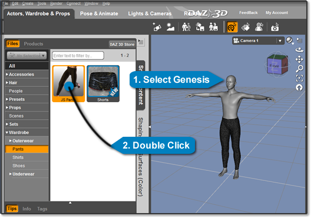
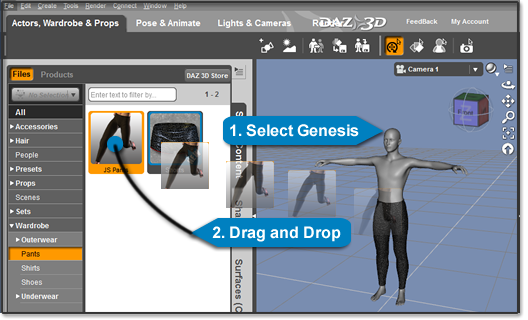
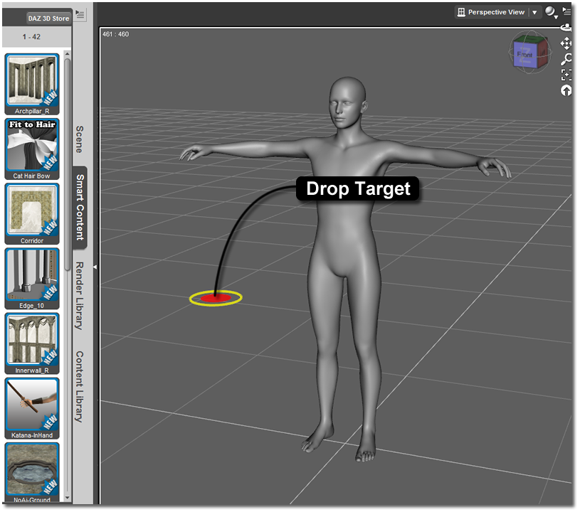
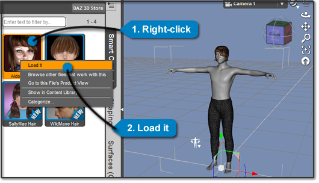
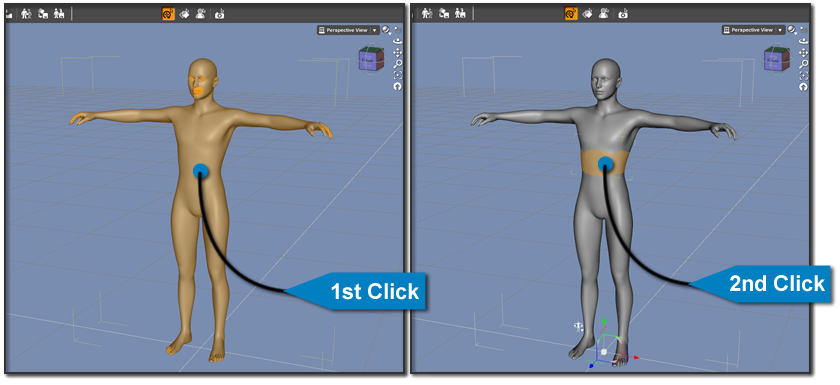
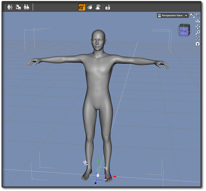
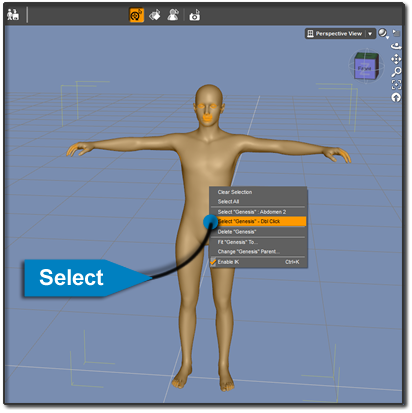
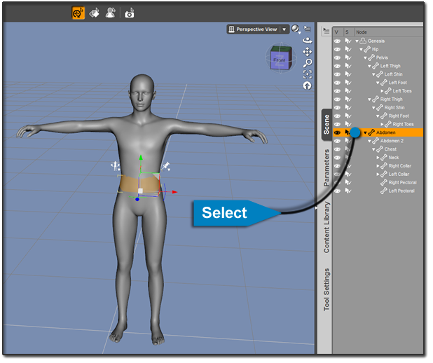

ចាប់ផ្តើមប្រើ Daz Studio
បកប្រែពី៖ Getting Started — DAZ 3D Documentation Center
ទំព័រនេះរួមបញ្ចូលមេរៀនចាប់ផ្តើមដំបូងបំផុតទាំង ៣ របស់មគ្គុទ្ទេសក៍ផ្លូវការ៖
ការចុះឈ្មោះ Daz Studio
លេខសៀរៀល (Serial number) ត្រូវបានបង្កើតសម្រាប់តែអាជ្ញាបណ្ណ Daz Studio ដែលបាន «ទិញ» ពី DAZ Store ប៉ុណ្ណោះ — សូម្បីតែការ «ទិញ» ក្នុងតម្លៃ $0.00 ក៏ដោយ។ ដូច្នេះ បើអ្នកបានទាញយក Daz Studio 4.x ពីគេហទំព័រផ្សេង (ដូចជា Download.com) ពី CD ភ្ជាប់នឹងសៀវភៅ ឬពីប្រភពផ្សេងក្រៅពីទំព័រ Daz Studio ផ្ទាល់ អ្នកត្រូវអនុវត្តតាមជំហានខាងក្រោម។
ជំហានទី ១ — បង្កើតគណនី DAZ 3D Store
ចុះឈ្មោះបង្កើតគណនី នៅលើ DAZ 3D Store
បញ្ជាក់អាសយដ្ឋានអ៊ីមែលរបស់គណនី (តាមរយៈអ៊ីមែលផ្ទៀងផ្ទាត់)
ត្រឡប់ទៅ DAZ 3D Store វិញ រួចចូល (Log in)
ជំហានទី ២ — បន្ថែម Daz Studio 4 ទៅក្នុងគណនី
បន្ថែម Daz Studio 4 ទៅក្នុងរទក់ទំនិញ (Shopping cart)
បញ្ចប់ដំណើរការ Checkout របស់ហាង
ជំហានទី ៣ — ទាញយកលេខសៀរៀល
ចូលទៅទំព័រ My Serial Numbers
ចម្លងលេខសៀរៀល Daz Studio 4
បិទភ្ជាប់លេខសៀរៀលចូលក្នុងប្រអប់នៃផ្ទាំងចុះឈ្មោះ Daz Studio 4.x
បើអ្នកបានបិទផ្ទាំងចុះឈ្មោះរួចហើយ អាចបើកវាឡើងវិញបានតាមរយៈម៉ឺនុយ Help > Register DAZ Studio... នៅលើរបារម៉ឺនុយមេ (Main Menu Bar)។
ការផ្ទុកមាតិកាចូលក្នុងឆាក
បន្ទាប់ពីដំឡើង និងបើក Daz Studio រួច ជំហានបន្ទាប់គឺផ្ទុកមាតិកាចូលក្នុងឆាករបស់អ្នក។ មានវិធីច្រើនយ៉ាង ហើយអ្នកអាចជ្រើសរើសវិធីដែលស្រួលបំផុតសម្រាប់លំហូរការងាររបស់អ្នក។
វិធីទី ១ — ចុចពីរដង (Double-click)


វិធីដែលពេញនិយមបំផុតគឺចុចពីរដងលើវត្ថុក្នុងផ្ទាំង Smart Content ឬ Content Library។ ដោយប្រើប៊ូតុងកណ្ដុរឆ្វេង ចុចពីរដងលើវត្ថុដែលអ្នកចង់បាន ហើយវានឹងផ្ទុកចូលក្នុងឆាក។ វាអាចនឹងផ្ទុកទៅលើតួ (Figure) បើអ្នកកំពុងជ្រើសរើសតួណាមួយ ឬដាក់នៅទីតាំងកំណត់ជាមុនក្នុងឆាក។
វិធីទី ២ — អូស និងទម្លាក់ (Drag & Drop)


ចុចប៊ូតុងឆ្វេងសង្កត់ទុក រួចអូសវត្ថុពីផ្ទាំងណាមួយទៅដាក់លើវត្ថុផ្សេង ឬលើ Viewport ហើយលែង។ វត្ថុនឹងផ្ទុកទៅលើតួ ឬចូលក្នុងឆាក អាស្រ័យលើប្រភេទវត្ថុដែលអ្នកជ្រើស។
វិធីទី ៣ — Content Drop Target


សង្កត់គ្រាប់ Alt រួចចុចឆ្វេងសង្កត់ និងអូសវត្ថុទៅលើ Viewport។ អ្នកនឹងឃើញរង្វង់មួយដើរតាមកណ្ដុរក្នុង Viewport — នៅពេលដាក់រង្វង់នៅកន្លែងដែលចង់បាន លែងប៊ូតុង ហើយវត្ថុនឹងផ្ទុកនៅចំកន្លែងនោះ។
Note
វិធីនេះដំណើរការតែជាមួយឯកសារប្រភេទ Poser ប៉ុណ្ណោះ។
វិធីទី ៤ — អូសឯកសារពីក្រៅកម្មវិធី
Daz Studio អនុញ្ញាតឱ្យអូសឯកសារពីក្រៅកម្មវិធីចូលទៅក្នុង Viewport។ អាស្រ័យលើប្រភេទឯកសារ លទ្ធផលខុសៗគ្នា៖ វត្ថុអាចផ្ទុក ឬប្ដូររូបរាង (Figure, Prop ឬ Material Preset) ឬដំណើរការក្នុងកម្មវិធីអាចដំណើរការ (ឯកសារ Script)។
Warning
កុំដំណើរការ Script ពីប្រភពដែលអ្នកមិនស្គាល់ឱ្យសោះ។
វិធីទី ៥ — ចុចស្ដាំ > Load it


ចុចស្ដាំលើវត្ថុដែលចង់បានក្នុងផ្ទាំងណាមួយ រួចជ្រើស Load it ពីម៉ឺនុយបរិបទ (Context Menu)។ វត្ថុនឹងផ្ទុកទៅលើតួ ឬចូលក្នុងឆាក អាស្រ័យលើប្រភេទវត្ថុ។
ការជ្រើសរើសវត្ថុក្នុងឆាក
ដើម្បីកែប្រែអ្វីមួយក្នុងឆាក ដំបូងអ្នកត្រូវជ្រើសរើសវាសិន។ ខាងក្រោមនេះជាវិធីជ្រើសរើសផ្សេងៗគ្នា។
វិធីទី ១ — ចុចឆ្វេង (Left-click)
ដោយប្រើឧបករណ៍ Universal Tool ចុចឆ្វេងម្ដងលើវត្ថុក្នុងឆាក៖
ការចុច លើកទី ១ ជ្រើសរើសវត្ថុទាំងមូល
ការចុច លើកទី ២ (ពេលវត្ថុត្រូវបានជ្រើសរួចហើយ) ជ្រើសរើសតែ Node ដែលអ្នកចុចត្រង់ៗ — ឧទាហរណ៍ ការជ្រើស Abdomen របស់ Genesis
សង្កត់គ្រាប់ Ctrl (Cmd សម្រាប់ Mac) ពេលចុច ដើម្បីជ្រើសវត្ថុច្រើនក្នុងពេលតែមួយ។


Note
លទ្ធផលអាស្រ័យលើឧបករណ៍ដែលអ្នកកំពុងប្រើ។ ជាមួយឧបករណ៍ Region Selection ឬ Surface Selection អ្នកនឹងជ្រើសបានតែ Region ឬ Surface ដែលចុចប៉ុណ្ណោះ មិនមែនតួទាំងមូលទេ។
វិធីទី ២ — ចុចពីរដង (Double-click)


ការចុចពីរដងលើវត្ថុនឹងជ្រើសរើសវត្ថុទាំងមូល។ សង្កត់ Ctrl (Cmd លើ Mac) ពេលចុចពីរដង ដើម្បីជ្រើសវត្ថុច្រើន។
វិធីទី ៣ — ចុចស្ដាំ > Select


ចុចស្ដាំលើវត្ថុក្នុងឆាក រួចជ្រើសវត្ថុ ឬផ្នែកនៃវត្ថុដែលអ្នកចង់បានពីម៉ឺនុយ។
វិធីទី ៤ — តាមរយៈផ្ទាំង Scene


ក្នុងផ្ទាំង Scene អ្នកអាចជ្រើសវត្ថុណាមួយដោយចុចឆ្វេង។ ដើម្បីជ្រើសផ្នែកជាក់លាក់នៃវត្ថុ ចុចលើព្រួញក្បែរវត្ថុនោះដើម្បីពង្រីកមែកធាង Scene Tree បន្តរហូតដល់ឃើញផ្នែកដែលចង់ជ្រើស (ឧទាហរណ៍៖ ម្រាមដៃរបស់ Genesis)។